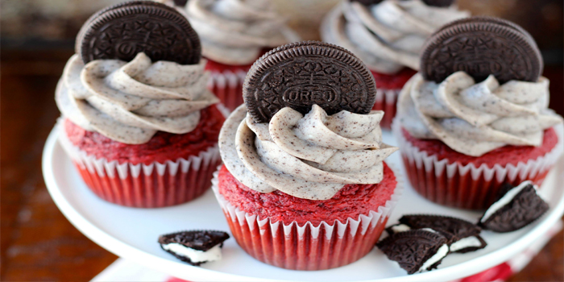

Red Velvet Oreo Cupcakes

Ingredients: Cake
- 1 box red velvet cake mix
- 3 eggs
- 1/2 C. oil
- 1 C. sour cream
- 1/2 C. buttermilk or milk
- 2 tsp. vanilla extract
- 24 Oreos
Ingredients: Oreo Buttercream
- 10 Oreos twist and scrape off (or eat) the cream filling
- 1/2 C. butter softened
- 8 oz. cream cheese
- 2 tsp. vanilla extract
- 3-4 C. powdered sugar
Time:
- Prep: 30m
- Cook: 45m
- Ready In: 1h 15m
Directions:
- Preheat oven to 350 degrees and line pans with cupcake lines.
- Sift cake mix into a small bowl and set aside.
- In a large bowl, combine eggs, oil, sour cream, buttermilk and vanilla extract until smooth.
- Stir in cake mix.
- Take your Oreos and place one at the bottom of each cupcake liner. (If you are afraid your oven will get to hot on the bottom you can always chop them up and fold them into the batter!)
- Scoop batter over each Oreo to fill the liners about 3/4 full.
- Bake for 15-20 minutes or until an inserted knife comes out clean.
- Let cool.
- reo Frosting: Take your Oreo cookies (just the chocolate pieces and not the filling) and crush in a plastic bag using a rolling pin. If you have a food processor that works the best! Sift your finely crushed Oreos to remove any lumps, because if you use a piping bag any big cookie pieces will clog it. In a stand mixer, beat butter and cream cheese. Add vanilla extract and slowly add powdered sugar until you reach your desired consistency. Fold in crushed Oreos. Don't stir too much or the frosting will turn a gross (yet delicious) grey color.
- Pipe onto cooled cupcakes and top with extra Oreos.